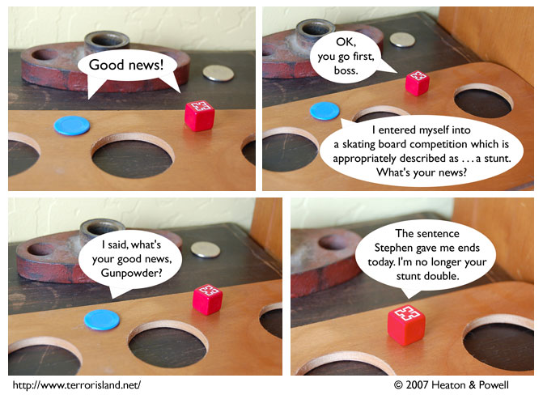

Strip #230
— Friday, November 30, 2007
Ruh-roh! How’s Jame going to get out of this dog-gone cat-astrophe?
Notes, Thoughts, &c.
Ben’s Notes
Remember, Gunpowder was only sentenced to be Jame’s stunt double for a limited time.
Wow, that strip’s pretty hard to read, what with the white speech bubbles on a bright white background. I’d like to go back and redo some of those old ones, but that would involve a lot of work.
Lewis’s Notes
True story: this strip inspired the famous author O. Henry to scribe
The Gift of the Magi,
which makes it important in the realms of
both literature and backwards causation.